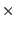
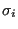
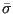
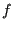

*CONSTRAINT
Keyword type: step
With *CONSTRAINT one can define constraints on design responses in a feasible direction step. It can only
be used for design variables of type COORDINATE. Furthermore, exactly one
objective function has to be defined within the same feasible direction step (using
the *OBJECTIVE keyword).
A constraint is an inequality expressing a condition on a design response
function. The inequality can be of type “smaller than or equal” (LE) or
“larger than or equal” (GE). The reference value for the inequality is to
be specified by a relative portion of an absolute value (the latter in the
units used by the user). For instance, suppose the user introduces an absolute
value of 20 and a relative value of 0.9 for a LE constraint on the mass. Than
the mass is not allowed to exceed 0.9 
20 = 18 mass units. If the
absolute value is zero, the initial value is taken, e.g. for the mass this
corresponds to the mass at the start of the calculation. If no relative value
is given 1. is taken.
Right now, the following design responses are allowed:
- ALL-DISP: the square root of the sum of the square of the displacements in all nodes of
the structure or of a subset if a node set is defined
- X-DISP: the square root of the sum of the square of the x-displacements in all nodes of
the structure or of a subset if a node set is defined
- Y-DISP: the square root of the sum of the square of the y-displacements in all nodes of
the structure or of a subset if a node set is defined
- Z-DISP: the square root of the sum of the square of the z-displacements in all nodes of
the structure or of a subset if a node set is defined
- EIGENFREQUENCY: all eigenfrequencies calculated in a previous (actually,
the eigenvalues, which are the square of the eigenfrequencies).
*FREQUENCY step
- MASS: mass of the total structure or of a subset if
an element set is defined
- STRAIN ENERGY: internal energy of the total structure or of a subset if
an element set is defined
- MISESSTRESS: the maximum von Mises stress of the total structure or of a
subset if a node set is defined. The maximum is approximated by the
Kreisselmeier-Steinhauser function
where 
is the von Mises stress in node i, and

are user-defined parameters. The higher the closer 
is to the actual
maximum (a value of 10 is recommended; the higher this value, the sharper the
turns in the function).
is the target stress, it
should not be too far
away from the actual maximum. The target stress must be positive.
- PS1STRESS: the maximum of the highest principal stress of the total structure or of a
subset if a node set is defined. The maximum is approximated by the
Kreisselmeier-Steinhauser function (cf. MISESSTRESS above, also here the
target stress must be positive).
- PS3STRESS: the minimum of the lowest principal stress of the total structure or of a
subset if a node set is defined. The minimum is approximated by the
Kreisselmeier-Steinhauser function. The target stress for PS3STRESS must be negative.
- EQUIVALENT PLASTIC STRAIN: the maximum equivalent plastic strain of the total structure or of a
subset if a node set is defined. The maximum is approximated by the
Kreisselmeier-Steinhauser function. The target equivalent plastic strain
must be postive.
First line:
Second line:
- the name of the design response
- LE for “smaller than or equal”, GE for “larger than or equal”
- a relative value for the constraint
- an absolute value for the constraint
Repeat this line if needed.
Example:
*SENSITIVITY
*DESIGN RESPONSE,NAME=DESRESP1
MASS,E1
.
.
.
*FEASIBLE DIRECTION
*CONSTRAINT
DESRESP1,LE,,3.
specifies that the mass of element set E1 should not exceed 3 in the user's units.
Example files: opt1.